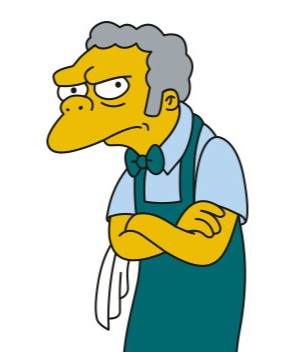
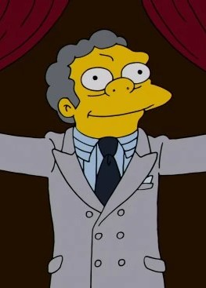

<!DOCTYPE html>
<html lang="en">
  <head>
    <meta charset="UTF-8" />
    <meta name="viewport" content="width=device-width, initial-scale=1.0" />
    <title>Moe's Tavern</title>
    <link rel="stylesheet" href="styles.css" />
  </head>
</html>

  <header>
    <h1>Moe's Tavern</h1>
    <nav>
      <ul>
        <li><a href="#home">Home</a></li>
        <li><a href='menu.html'>Menu</a></li>
        <li><a href='notallowed.html'>Not Allowed</a></li>
        <li><a href="#contact">Contact Us</a></li>
      </ul>
    </nav>
  </header>
<body>
  <section id="home">
    <h2>Welcome to Moe's Tavern!</h2>
    <p>Your favorite spot for drinks and good company; where the floor is stickier than the friendships</p>
    <p>Check out our menu!</p>

     <div class="content-grid">
       <div class="card"></div>
          <div class="card">
             <p>Moe's Tavern is owned and operated by the one and only Moe Szyslak. Nestled right in the heart of the town of Springfield, Moe’s is the go-to spot for cold beer, hot gossip, and questionable karaoke. Moe’s isn’t fancy, but that’s the point. It’s the kind of place where locals gather to unwind, laugh, and occasionally prank call the owner. Between our legendary Duff Beer, our signature Flaming Moe drink, our finger-licking Dare Devil pickled eggs, and the occasional brawl over the remote, Moe’s has become a second home for Springfield’s finest and weirdest characters.</p>
          </div>
       <div class="card"></div>
    
  </section>

    <section id="contact">
    <h2>Contact Us</h2>
    <p>Email: moeduff@simpsons.web</p>
      <p>Phone: I won't answer prank calls!</p>
  </section>
</body>

</html>


